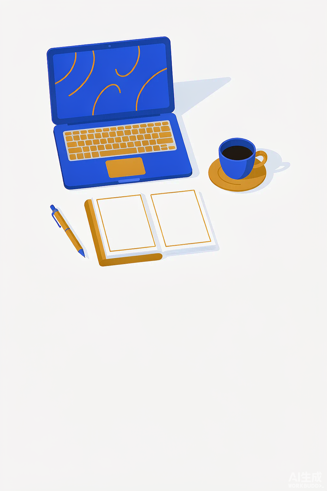
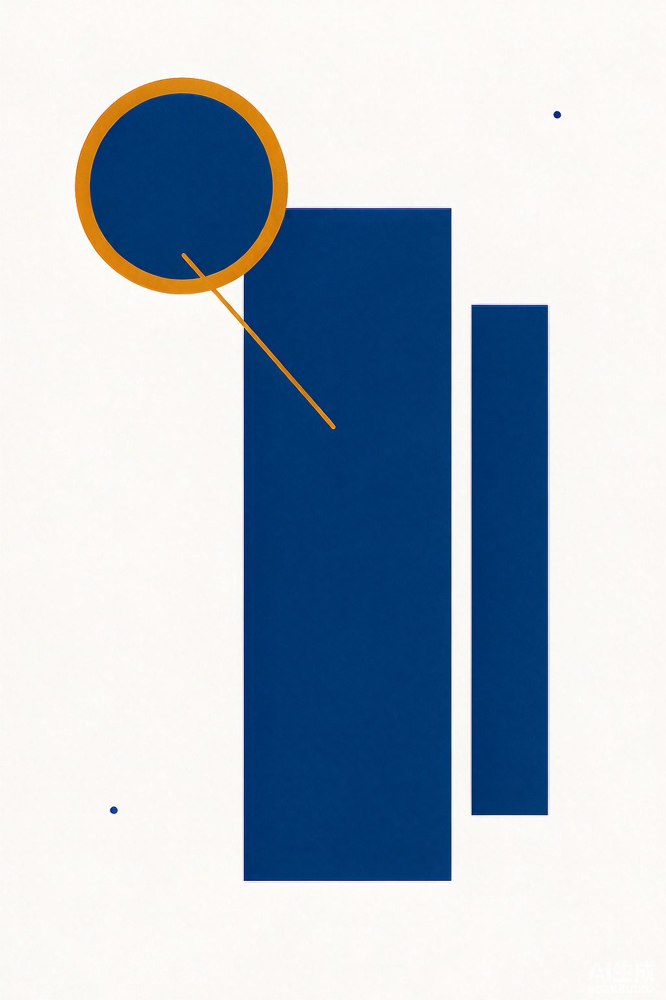
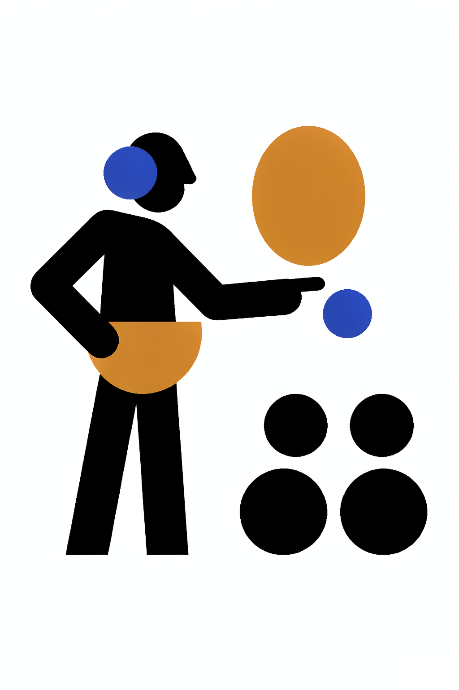

我用 AI 整理了一周会议纪要，省下 5 小时
不写代码，也能让 AI 帮你把录音和笔记，变成清晰的摘要与待办。
IT 从业者、极客计算机老师，也是 AI 重度使用者。专注成长干货与工具分享， 研究任务与学习的自动化，重新定义个人效率，把简单留给自己。
一名 IT 从业者，也是带点极客味的计算机老师，日常工作里重度依赖 AI。喜欢把复杂工具玩明白，再讲给普通人听。
专注成长干货与工具分享，研究任务和学习的自动化；在小红书和微信公众号「Jack实验室」持续输出。
“重新定义个人效率，把简单留给自己。”
放一些工作与生活中的影像，或你用 AI 做出来的小作品。替换方式：把 .photo-img 这个占位块换成 <img class="photo-img" src="photo1.jpg" alt="" />。



“网站不必热闹，能把一件事讲清楚，就值得被看见。”—— Jack实验室
微信公众号：Jack实验室
小红书：搜索 Jack实验室
把二维码命名为 qr.png 放在同目录，并把下面的注释去掉即可显示。